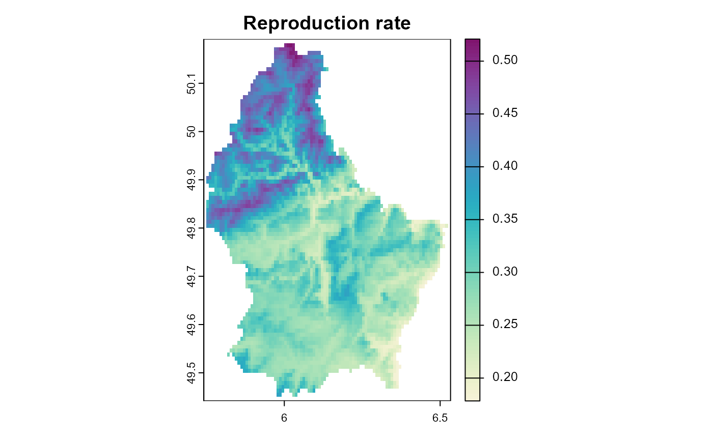
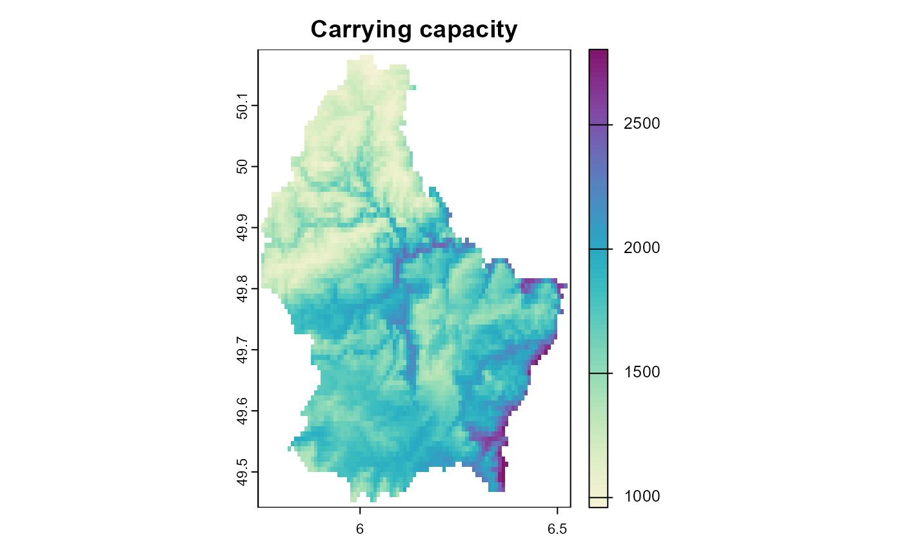

06: Metabolic scaling
Fallert, S. and Cabral, J.S.
Source:vignettes/A06_metabolic_scaling.Rmd
A06_metabolic_scaling.RmdThe metabolic rate of an organism is strongly dependent its size (i.e. its mass) and on its body temperature (i.e. the temperature of the environment for poikilotherm animals). In consequence this also influences different processes such as growth, reproduction and mortality. This concept is described in the “metabolic theory of ecology” (MTE) by Brown et al. (2004) [Ref: 1] which can be expressed in the following equation: Where:
- = scaled parameter.
- = normalization constant.
- = allometric scaling exponent of the mass.
- = mean (individual) mass.
- = temperature in kelvin (K).
- = activation energy in electronvolts (eV).
- = Boltzmann’s constant (eV / K).
To include this effect in simulations, metaRange offers
the option to use metabolic scaling based on the MTE through the
function metabolic_scaling(), which can be used to
calculate the parameter value for any metabolically influenced process.
It has to be noted that different processes have different activation
energy values and scaling exponents.
| Parameter | Scaling exponent | Activation energy |
|---|---|---|
| resource usage | 3/4 | -0.65 |
| reproduction, mortality | -1/4 | -0.65 |
| carrying capacity | -3/4 | 0.65 |
Table 1: Common parameter and their associated scaling exponents and activation energies. Source: table 2 in Brown, J.H., Sibly, R.M. and Kodric-Brown, A. (2012) [Ref: 2]
Calculating the normalization constant
Since the data for experimentally measured values of the
normalization constant for different species is generally scarce,
metaRange offers the function
calculate_normalization_constant() to calculate the
normalization constant based on an estimated value for the parameter
under a reference temperature.
Lets say for example we estimate that a species (avg. bodyweigth = 1 gram) has a reproduction rate of 1 and a carrying capacity of 100 at a temperature of 20 degree Celcius (293.15 degree Kelvin). We can calculate the normalization constant as follows:
library(metaRange)
#> metaRange version: 1.2.0
R0 <- calculate_normalization_constant(
parameter_value = 1,
scaling_exponent = -1/4,
mass = 1,
reference_temperature = 293.15,
E = -0.65
# paramter "k" is given as default of the function
)
C0 <- calculate_normalization_constant(
parameter_value = 100,
scaling_exponent = -3/4,
mass = 1,
reference_temperature = 293.15,
E = 0.65
# paramter "k" is given as default of the function
)Now we can use this constant to perform the metabolic scaling. Instead of the reference temperature, we can now give a vector of different temperatures (or possibly body weights), for which we want to calculate the scaling. The MTE makes the following predictions about how the different parameters scale in relation to mass and temperature:
- Reproduction rate increases with temperature, but decreases with mass.
- Carrying capacity decreases with temperature and with mass.
We can test these predictions by plotting the result of our example.
test_temperature <- seq(280, 300, length.out = 100)
control_temperature <- rep(293.15, 100)
test_mass <- seq(0.5, 1.5, length.out = 100)
control_mass <- rep(1, 100)
scaled_reproduction_rate <- metabolic_scaling(
normalization_constant = R0,
scaling_exponent = -1/4,
mass = control_mass,
temperature = test_temperature,
E = -0.65
)
plot(
test_temperature,
scaled_reproduction_rate,
type = "l",
xlab = "temperature (K)",
ylab = "scaled reproduction rate"
)
scaled_reproduction_rate <- metabolic_scaling(
normalization_constant = R0,
scaling_exponent = -1/4,
mass = test_mass,
temperature = control_temperature,
E = -0.65
)
plot(
test_mass,
scaled_reproduction_rate,
type = "l",
xlab = "mass (g)",
ylab = "scaled reproduction rate"
)
scaled_carrying_capacity_rate <- metabolic_scaling(
normalization_constant = C0,
scaling_exponent = -3/4,
mass = control_mass,
temperature = test_temperature,
E = 0.65
)
plot(
test_temperature,
scaled_carrying_capacity_rate,
type = "l",
xlab = "temperature (K)",
ylab = "scaled carrying capacity"
)
scaled_carrying_capacity_rate <- metabolic_scaling(
normalization_constant = C0,
scaling_exponent = -3/4,
mass = test_mass,
temperature = control_temperature,
E = 0.65
)
plot(
test_mass,
scaled_carrying_capacity_rate,
type = "l",
xlab = "mass (g)",
ylab = "scaled carrying capacity"
)Example
Now, to do include this in our simulation, we can set it up similarly as in the previous vignettes.
library(terra)
#> terra 1.8.44
set_verbosity(0)
raster_file <- system.file("ex/elev.tif", package = "terra")
r <- rast(raster_file)
temperature <- scale(r, center = FALSE, scale = TRUE) * 10 + 273.15
precipitation <- r * 2
temperature <- rep(temperature, 10)
precipitation <- rep(precipitation, 10)
landscape <- sds(temperature, precipitation)
names(landscape) <- c("temperature", "precipitation")
sim <- create_simulation(landscape)
sim$add_species(name = "species_1")First, we define some basic traits.
sim$add_traits(
species = "species_1",
population_level = FALSE,
temperature_maximum = 300,
temperature_optimum = 288,
temperature_minimum = 280
)Then add the parameter used in the metabolic scaling as global variables, since they are not specific to one species.
sim$add_globals(
"E_reproduction_rate" = -0.65,
"E_carrying_capacity" = 0.65,
"exponent_reproduction_rate" = -1 / 4,
"exponent_carrying_capacity" = -3 / 4,
"k" = 8.617333e-05
)We add the traits that are used in the reproduction model including an estimate of the reproduction rate and the carrying capacity.
sim$add_traits(
species = "species_1",
population_level = TRUE,
"abundance" = 100,
"reproduction_rate" = 0.5,
"carrying_capacity" = 1000,
"mass" = 1
)Now we can calculate the normalization constant, based on the parameter estimate and the optimal temperature of the species and add them as traits as well. Note that this could also be done in a loop over multiple species.
sim$add_traits(
species = "species_1",
population_level = FALSE,
"reproduction_rate_mte_constant" = calculate_normalization_constant(
parameter_value = sim$species_1$traits[["reproduction_rate"]][[1]],
scaling_exponent = sim$globals[["exponent_reproduction_rate"]],
mass = sim$species_1$traits[["mass"]][[1]],
reference_temperature = sim$species_1$traits[["temperature_optimum"]],
E = sim$globals[["E_reproduction_rate"]],
k = sim$globals[["k"]]
),
"carrying_capacity_mte_constant" = calculate_normalization_constant(
parameter_value = sim$species_1$traits[["carrying_capacity"]][[1]],
scaling_exponent = sim$globals[["exponent_carrying_capacity"]],
mass = sim$species_1$traits[["mass"]][[1]],
reference_temperature = sim$species_1$traits[["temperature_optimum"]],
E = sim$globals[["E_carrying_capacity"]],
k = sim$globals[["k"]]
)
)Add finally, we can add a process that does the metabolic scaling in each time step.
sim$add_process(
species = "species_1",
process_name = "mte",
process_fun = function() {
self$traits[["reproduction_rate"]] <- metabolic_scaling(
normalization_constant = self$traits[["reproduction_rate_mte_constant"]],
scaling_exponent = self$sim$globals[["exponent_reproduction_rate"]],
mass = self$traits[["mass"]],
temperature = self$sim$environment$current[["temperature"]],
E = self$sim$globals[["E_reproduction_rate"]],
k = self$sim$globals[["k"]]
)
self$traits[["carrying_capacity"]] <- metabolic_scaling(
normalization_constant = self$traits[["carrying_capacity_mte_constant"]],
scaling_exponent = self$sim$globals[["exponent_carrying_capacity"]],
mass = self$traits[["mass"]],
temperature = self$sim$environment$current[["temperature"]],
E = self$sim$globals[["E_carrying_capacity"]],
k = self$sim$globals[["k"]]
)
},
execution_priority = 2
)After this point, more processes could be added that use the scaled parameters (See previous articles / vignettes). Here we just plot the scaled parameter instead.
sim$set_time_layer_mapping(c(1, 2))
sim$begin()
plot_cols <- hcl.colors(100, "Purple-Yellow", rev = TRUE)
plot(sim, "species_1", "reproduction_rate", col = plot_cols, main = "Reproduction rate")
plot(sim, "species_1", "carrying_capacity", col = plot_cols, main = "Carrying capacity")

Note that these results show an “everything else equal” scenario, where the only variable is the temperature. In a more realistic scenario, the suitability of the habitat might also influence the reproduction rate and carrying capacity or the mean individual body mass might change with the temperature and change the results.
References
Brown, J.H., Gillooly, J.F., Allen, A.P., Savage, V.M. and West, G.B. (2004). Toward a Metabolic Theory of Ecology. Ecology, 85: 1771-1789. doi:10.1890/03-9000
Brown, J.H., Sibly, R.M. and Kodric-Brown, A. (2012). Introduction: Metabolism as the Basis for a Theoretical Unification of Ecology. In: Metabolic Ecology (eds R.M. Sibly, J.H. Brown and A. Kodric-Brown). doi:10.1002/9781119968535.ch